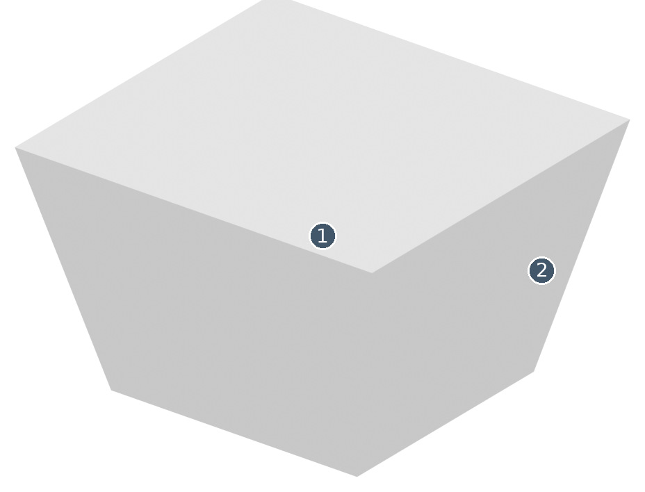
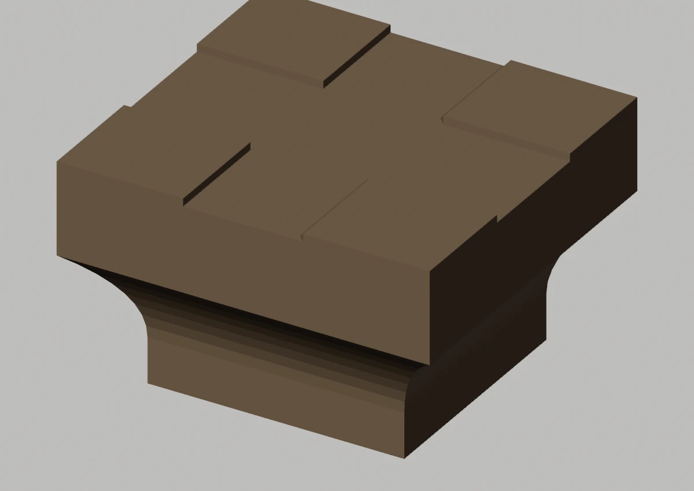
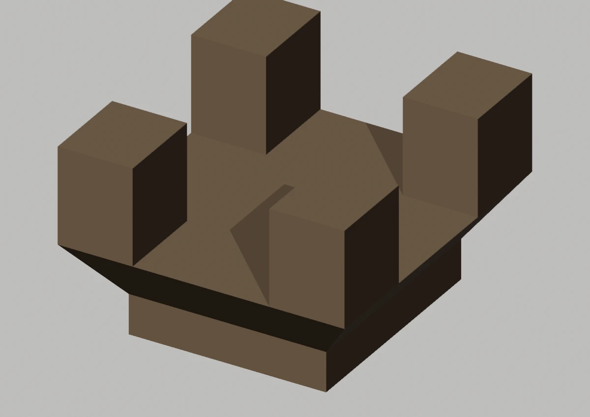
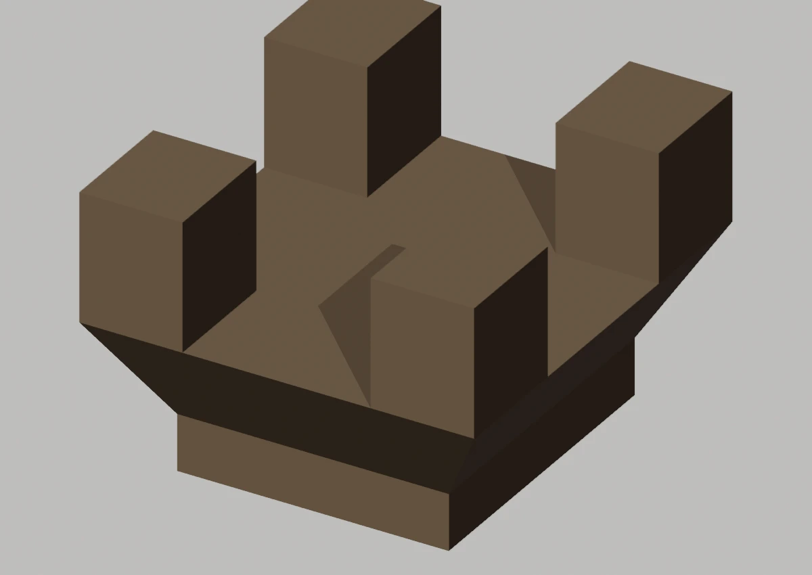
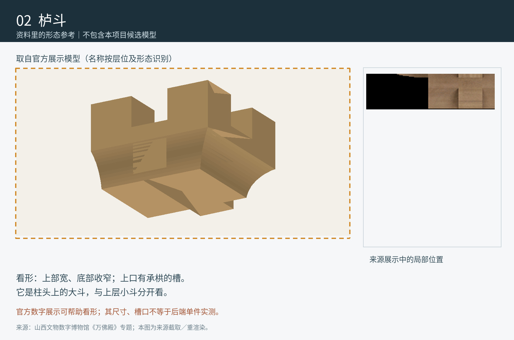

Master已有收分，不是长方体
先看形，再看差异


Master为平顶简化包络，未表达这些细部
定性对照：两侧未做比例归一或像素叠加。橙色虚框只表示原图查找范围。
02 / 形态细节
其他角度、截面与现有局部版本


现有局部工作模型 · 与 Master 分开看



03 / 原图与位置
目标在原始资料的哪里


安装位置与复用
西北角柱；北侧西中柱；北侧东中柱；东北角柱；东侧北中柱；东侧南中柱；东南角柱；南侧东中柱；南侧西中柱；西南角柱；西侧南中柱；西侧北中柱
变体：沿用现行登记口径
Master：CMP-LUDOU-COLUMN-001_MASTER
对应实例范围（12条登记记录，不是物理件数）
- 柱头栌斗-西北角柱 · 西北角柱
- 柱头栌斗-北侧西中柱 · 北侧西中柱
- 柱头栌斗-北侧东中柱 · 北侧东中柱
- 柱头栌斗-东北角柱 · 东北角柱
- 柱头栌斗-东侧北中柱 · 东侧北中柱
- 柱头栌斗-东侧南中柱 · 东侧南中柱
- 柱头栌斗-东南角柱 · 东南角柱
- 柱头栌斗-南侧东中柱 · 南侧东中柱
- 柱头栌斗-南侧西中柱 · 南侧西中柱
- 柱头栌斗-西南角柱 · 西南角柱
- 柱头栌斗-西侧南中柱 · 西侧南中柱
- 柱头栌斗-西侧北中柱 · 西侧北中柱
04 / 证据与边界
出处、模型身份与未知部分
仍然未知：官方模型只作展示参考，匿名节点身份为推断；本图不证明槽口精确尺度。
V001文字纠正：原页“长方体”说法不准确。该Master的网格坐标和原渲染都显示上宽下窄的收分，8顶点、6面不能作为长方体判断依据。仍保留原“占位包络”登记标签；正式模型与批准结论未变。
原工程记录（按原文保留）：现有 Master 仅为8顶点6面的长方体包络，未表现斗耳、欹面与开口。C02 局部轮廓批准不能自动升级为全殿 Master。
资料出处
10月14日归档的官方展示模型提取图｜不是独立实测 · 归档原图 71f50ad723-02_SOURCE_栌斗.png

A1 · PDF第295页 / 印刷第280页 · 归档原图 A1-p295.jpg

模型原始渲染、网格身份与批准范围
GitHub 已有审核渲染 沿用原有审核图；批准范围及外形证据限制保持。

trial:EAST_FRONT_COLUMN_LUDOU C02六处局部轮廓已批准；不晋升Master。

east:LUDOU_FRONT main工作V003：含局部批准和待审对象；此图不升级批准。

west:LUDOU_FRONT main工作V003：含局部批准和待审对象；此图不升级批准。

A1、A2、A3共享测绘数据脉络，不作为三次独立复测。官方展示只作形态参考；推断、遮挡与未知不升级为实测事实。